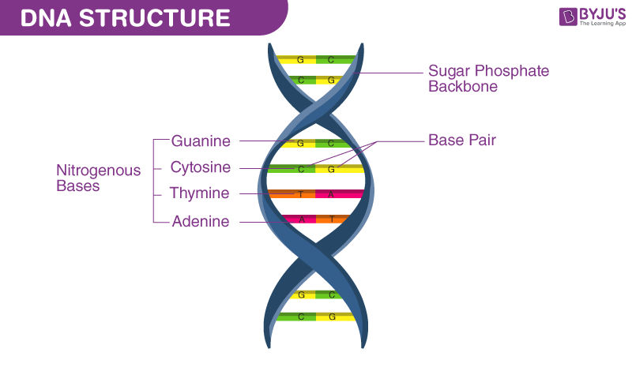
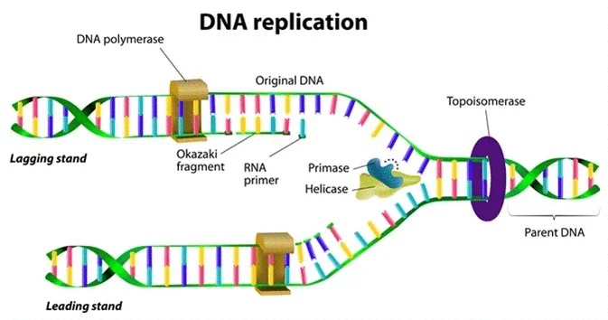
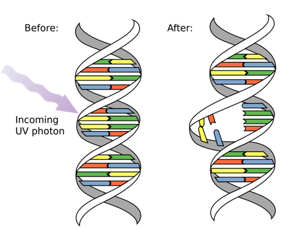

DNA (Deoxyribonucleic Acid) is the molecule that contains the genetic code of organisms. DNA is found in every cell of the body and is essential for the creation of proteins, which perform most of the functions in the body.
Double Helix: DNA is shaped like a twisted ladder.
Nucleotides: The building blocks of DNA, consisting of a sugar, a phosphate group, and a nitrogen base (Adenine, Thymine, Cytosine, Guanine).
DNA Replication and Repair: DNA replication is the process by which a DNA molecule makes a copy of itself. This is essential for cell division and the maintenance of genetic information.
Mutations are changes in the DNA sequence that can lead to variations in traits or sometimes cause diseases.
[Video: The Structure of DNA]
[Interactive: DNA Replication Process]
[Case Study: Genetic Mutations and Their Effects]